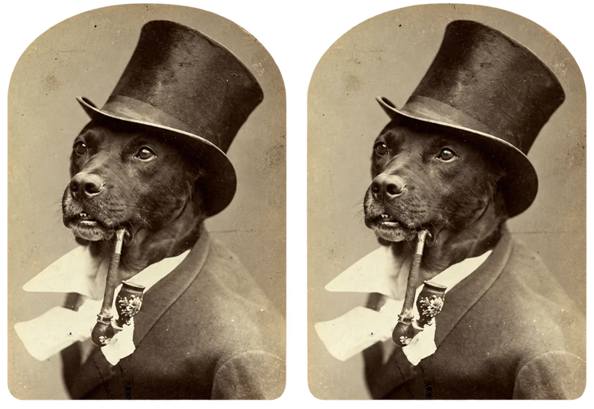
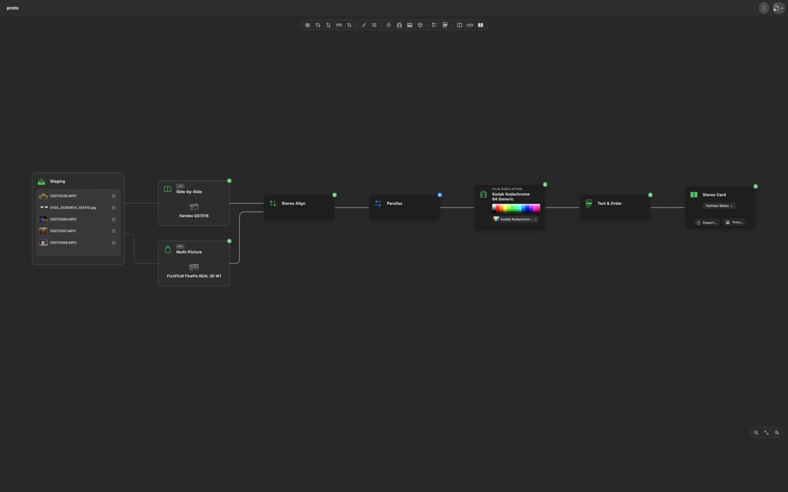
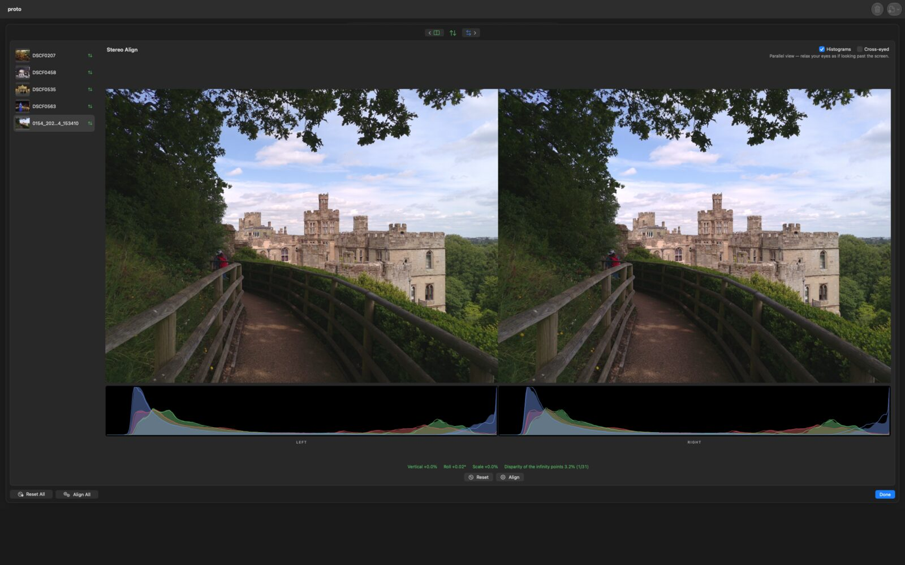
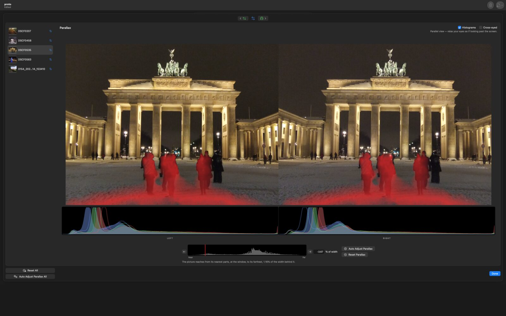
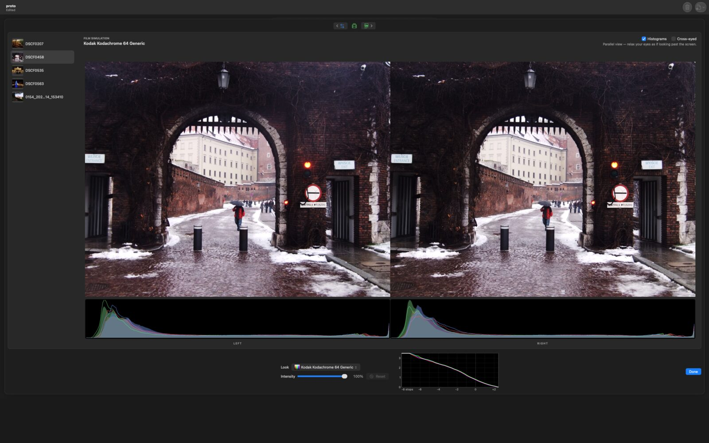
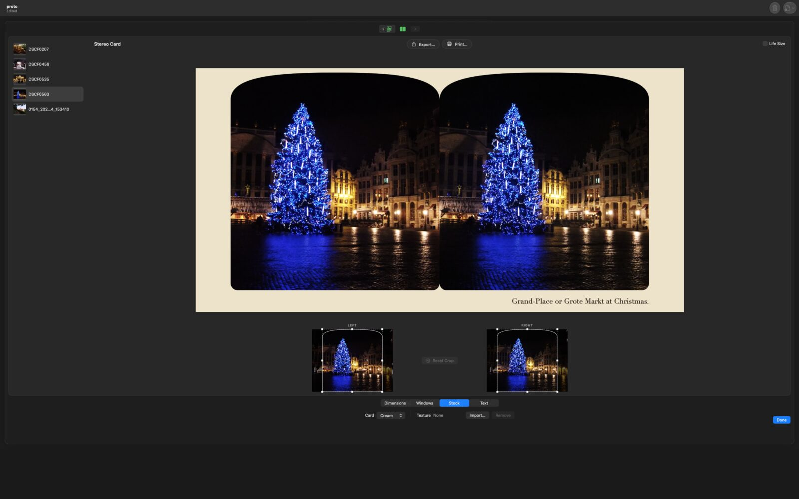

For the Mac
Stereo Dandifier
The Stereographer's Companion

An apparatus for the preparation of stereoscopic photographs, from the camera's own files to the finished picture or stereo card — wherein every pair is aligned, set at its window, matched in colour and laid out, by one workflow and with the least of trouble.
To be had from the Mac App Store.
It requires a Mac with Apple silicon, and macOS 26.5 or later.
Its Several Departments
From the Camera
It reads the files of stereo cameras as they come, and recognises each kind without being told:
- Fujifilm FinePix REAL 3D MPO files;
- spatial photographs from iPhone and Apple Vision Pro;
- side-by-side frames from dual-fisheye lenses and the Kandao QooCam EGO;
- twin files from rigs of two cameras;
- and sequences from a single camera moved sideways.
What it cannot pair with certainty it keeps, to be paired by hand. Camera RAW files are developed plainly, by macOS's own engine.
In the Workshop
- Stereo Align removes the vertical offset, roll and scale between the eyes, measured from the pair itself, without disturbing its depth.
- Parallax sets the stereo window upon a histogram of the pair's depth.
- Defish takes fisheye lenses into a flat projection.
- Level and Crop act upon both eyes alike.
- Stereo Colour Match brings two cameras' exposure and colour into agreement.
Looks of the Period
- Kodak Wratten lens filters, simulated from Kodak's published transmission.
- Film stocks of every description, from RawTherapee's celebrated collection.
- Historical printing processes: silver gelatin, the sepias, albumen, cyanotype.
- Look tables of the operator's own.
For Presentation
- Stereo cards in genuine formats — Holmes-Bates, Thorpe, OWL and others — with period windows, card stocks and captions, shown at life size upon the screen.
- Anaglyphs for red/cyan, green/magenta and amber/blue spectacles, by Dubois's method among others.
- Side-by-side pictures, parallel or cross-eyed, for viewers, headsets and 3D televisions.
- Export as JPEG, HEIC, PNG, TIFF or PDF, or print.
Plates
Each may be opened at its full size.










Particulars
- Price
- Free of charge.
- Requires
- A Mac with Apple silicon; macOS 26.5 or later.
- Privacy
- It asks no account, makes no connection and keeps no record of the operator. Every file stays where it lies.
- Instruction
- Each node bears its own explanation, and the whole manual may be read here.